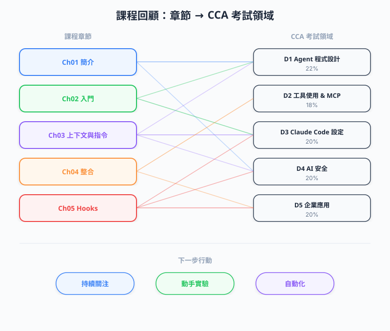

| 項目 | 內容 |
|---|---|
| 考試對應 | 全部 5 個 Domain（D1-D5） |
| Task Statements | 複習：1.1、2.1、2.4、3.1、3.2、3.6 |
| 課程來源 | claude-code-in-action / 06-sdk-and-wrap-up / Lesson 22 |
課程最後給出三個行動建議 — 持續關注更新、勇於實驗客製化、善用 GitHub 整合自動化 — 同時作為整門課涵蓋的五大 CCA 考試 domain 的總複習。

| # | 建議 | 具體含義 | 對應考試 Domain |
|---|---|---|---|
| 1 | Stay Updated（保持更新） | Claude Code 持續活躍開發中，新功能、工具和技巧頻繁推出。追蹤 Claude Code 首頁和 changelog。 | D1 — Agentic Architecture（理解不斷演進的能力） |
| 2 | Experiment（實驗） | 撰寫 custom commands、豐富 CLAUDE.md、嘗試課程之外的 MCP servers。透過動手實驗建立肌肉記憶。 |
D2 — Tool Use & MCP、D3 — Configuration |
| 3 | Automate（自動化） | 用 GitHub integration 將重複性任務交給 Claude。思考哪些觸發條件（PR 建立、Issue 開啟、@claude mention）可以驅動自動化。 |
D3 — CI/CD、D5 — Developer Productivity |
這是考前複習最重要的對照表。每個章節對應到特定的 CCA domain：
| 章節 | 課程 | 主要 Domain | 次要 Domain | 核心概念 |
|---|---|---|---|---|
| 01 — Intro | 02-04 | D1 — Agentic Architecture（27%） | D5 — Developer Productivity（18%） | Agentic loops、plan-execute-observe 循環、coding assistant vs autocomplete |
| 02 — Getting Started | 05-08 | D3 — Configuration（20%） | D1 — Agentic Architecture（27%） | CLAUDE.md、project setup、context window、permission model、iterative changes |
| 03 — Context & Commands | 10-11 | D3 — Configuration（20%） | D2 — Tool Use & MCP（20%） | Context 管理、@file 引用、custom slash commands、.claude/commands/ |
| 04 — Integrations | 12-13 | D2 — Tool Use & MCP（20%） | D3 — Configuration（20%） | MCP 架構（host/client/server）、settings.json、GitHub Actions、-p flag、allowed_tools |
| 05 — Hooks | 14-19 | D3 — Configuration（20%） | D1 — Agentic Architecture（27%） | Hook 生命週期（9 種）、PreToolUse/PostToolUse、blocking vs non-blocking、stdin/stdout 協定 |
| 06 — SDK & Wrap Up | 20-22 | D1 — Agentic Architecture（27%） | D4 — Security（15%） | SDK programmatic access、claudeClient.sendMessage()、conversation turns array、總複習 |
| 概念 | 章節 | Domain | 一句話定義 |
|---|---|---|---|
| Agentic loop | 01 | D1 | Claude 自主地計畫、執行工具、觀察結果、迭代，直到任務完成。 |
CLAUDE.md |
02 | D3 | 專案層級的指令檔，Claude 會自動讀取以理解專案慣例和約束。 |
| Permission model | 02 | D4 | 三層架構 — project（settings.json）、user（settings.local.json）、enterprise（settings.enterprise.json）— 使用 allowlist 和 denylist。 |
| Context window | 03 | D1 | 有限的 token 預算；透過 @file 引用、.claudeignore 和 compaction 管理。 |
| Custom commands | 03 | D3 | 放在 .claude/commands/ 的 Markdown 檔案，定義可重複使用的 slash command，支援 $ARGUMENTS 插值。 |
| MCP architecture | 04 | D2 | Host（Claude Code）透過 stdio/SSE 連接 MCP servers；servers 提供 tools、resources 和 prompts。 |
CI 中的 allowed_tools |
04 | D3/D4 | 在 non-interactive 模式（-p flag）下，每個 tool 必須逐一列出 — 不能用 blanket server 權限。 |
| Hooks | 05 | D3 | 在特定生命週期節點執行的腳本；9 種類型，2 種可 blocking（PreToolUse、UserPromptSubmit）。 |
| Hook stdin/stdout 協定 | 05 | D3 | Hooks 透過 stdin 接收 JSON，透過 stdout 回傳 JSON。結構依 hook 類型和 tool matcher 而異。 |
SDK（@anthropic-ai/claude-code） |
06 | D1 | Node.js 套件，提供 programmatic 存取；呼叫 claudeClient.sendMessage() 回傳 conversation turns array，支援 streaming。 |
用這份清單確認你已涵蓋課程中的每個主要主題：
sendMessage、conversation turns）settings.json 中設定 MCP serversCLAUDE.md 檔案（root、nested、~/.claude/CLAUDE.md）.claude/commands/ 中建立 custom commandscustom_instructions、mcp_config、allowed_tools 設定層級Q: MCP servers 的傳輸機制有哪些？
A: stdio（本機 process）和 SSE（HTTP streaming）。課程主要涵蓋 stdio 用於本機 MCP servers 和 GitHub Actions 環境。
Q: -p flag 是什麼？何時使用？
A: -p（print/pipe）flag 讓 Claude Code 以 non-interactive 模式運行。用於 CI/CD（GitHub Actions）。因為沒有人類可以批准，需要 allowed_tools 逐一列出每個允許的 tool。
Q: 列出兩種 blocking hook 類型。
A: PreToolUse 和 UserPromptSubmit。這兩種可以透過回傳 { "decision": "block" } 阻止 Claude 繼續。
Q: CLAUDE.md 設定的三個層級是什麼？
A: (1) 專案根目錄 CLAUDE.md，(2) 巢狀目錄 CLAUDE.md 檔案（作用範圍限於子目錄），(3) 使用者全域 ~/.claude/CLAUDE.md。
Q: SDK 和 CLI 的差異是什麼？
A: SDK（@anthropic-ai/claude-code）透過 Node.js 提供 programmatic 存取。呼叫 claudeClient.sendMessage() 回傳 conversation turns array。CLI 是互動式終端機使用。
Q: Custom commands 使用什麼檔案結構？
A: .claude/commands/（project scope）或 ~/.claude/commands/（user scope）中的 Markdown 檔案。用 /command-name 呼叫。支援 $ARGUMENTS placeholder 做參數化。
Q: 在 GitHub Actions 中，為什麼不能用 mcp__playwright 作為 blanket 權限？
A: 在 non-interactive 模式（-p flag）中，沒有人類可以批准 tool 使用。每個 tool 必須在 allowed_tools 中逐一列出。Blanket server-level 權限只在互動（本機）模式下有效。
Q: Hook 的 stdin/stdout 協定是什麼？
A: Hooks 透過 stdin 接收帶有事件 context 的 JSON。透過 stdout 回傳 JSON。對 PreToolUse：回傳 { "decision": "allow" } 或 { "decision": "block", "reason": "..." }。結構依 hook 類型而異。
Q: 講師給了哪三個持續學習的建議？
A: (1) Stay updated — Claude Code 持續演進中。(2) Experiment — 嘗試 custom commands、CLAUDE.md 客製化、新的 MCP servers。(3) Automate — 用 GitHub integration 處理由事件觸發的重複性任務。
Q: 哪個考試 domain 權重最高？
A: D1 — Agentic Architecture，佔 27%。涵蓋 agentic loops、tool selection、SDK，以及核心的 plan-execute-observe 循環。